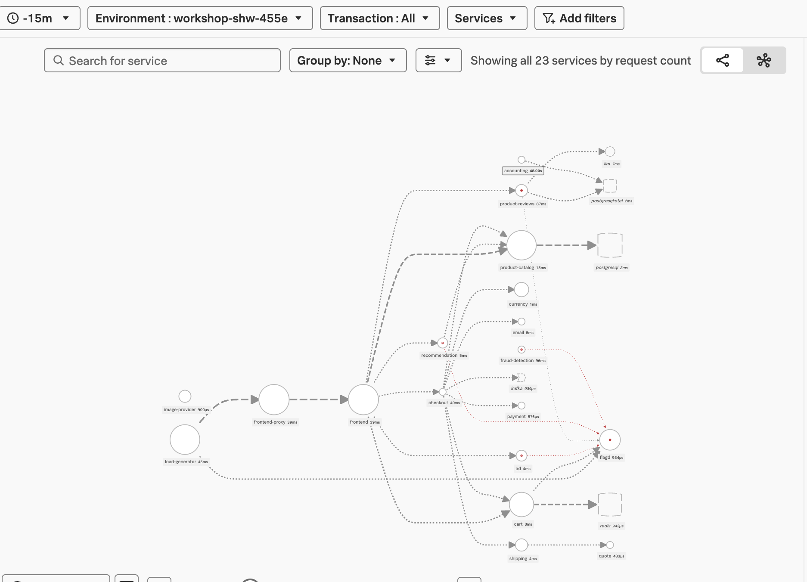
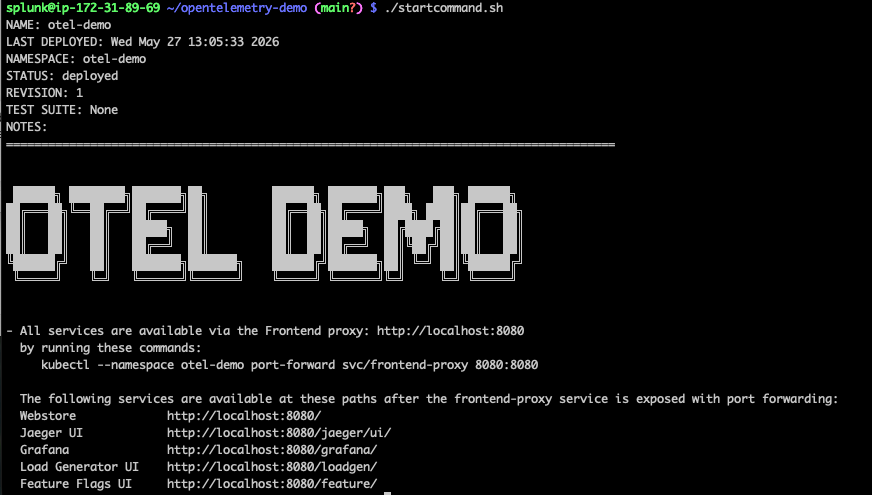
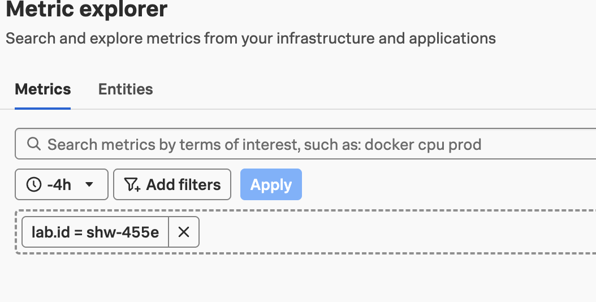
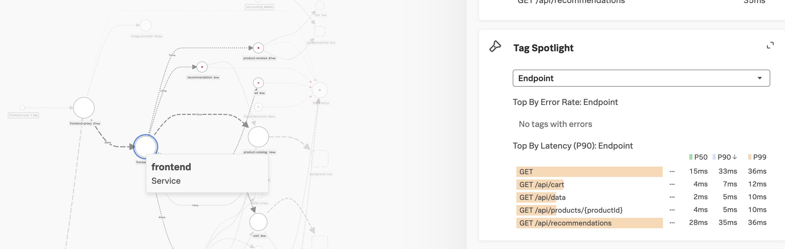

A. APM → Service Map → Filter
- Open APM → Service Map
- In the filter bar, add
lab.id:shw-455e(use your$INSTANCEvalue) - Confirm your demo services appear on the map

lab.id filter appliedHands-on lab
Install the upstream opentelemetry-demo Helm chart on a k3d cluster,
export traces and metrics to Splunk Observability Cloud, and find your data
using lab.id and lab.owner tags.
Key idea
Each workshop host gets a unique INSTANCE ID. Resource attributes on the collector tag every signal so you can filter to your demo in Observability Cloud.
Connect to your workshop host, then confirm environment variables and that the k3d cluster is healthy before deploying.
Your instructor will provide the host, port, and username for your lab environment. The SSH command should look like this:
ssh -p 2222 splunk@<workshop-host>Instructor-provided details
Do not use placeholder values from this guide. Your instructor will share the correct host IP or hostname, port, and login for your session.
echo "REALM=$REALM"
[ -n "$ACCESS_TOKEN" ] && echo "TOKEN: set" || echo "TOKEN: MISSING"kubectl get nodesExpected output:
NAME STATUS ROLES AGE VERSION
k3d-shw-455e-cluster-agent-0 Ready <none> 5d v1.33.4+k3s1
k3d-shw-455e-cluster-agent-1 Ready <none> 5d v1.33.4+k3s1
k3d-shw-455e-cluster-server-0 Ready control-plane,master 5d v1.33.4+k3s1This is the cluster agent that is installed to monitor Workshop systems.
echo $INSTANCE # This is your instance name — use it to find your data laterExpected output:
shw-455eThis is unique to each Workshop host.
Clone the upstream OpenTelemetry demo and add the Helm chart repository.
This leaves you in the opentelemetry-demo directory.
cd ~ && git clone https://github.com/open-telemetry/opentelemetry-demo.git
cd opentelemetry-demoThis downloads and loads the upstream Helm charts into the local Helm repo.
helm repo add open-telemetry https://open-telemetry.github.io/opentelemetry-helm-charts
helm repo updateDeploying into a dedicated namespace makes it easy to delete and start over.
kubectl create namespace otel-demoUse vi (or your editor) to create splunk-values.yaml in the opentelemetry-demo directory.
opentelemetry-collector:
config:
exporters:
otlphttp/signalfx:
traces_endpoint: ""
headers:
X-SF-Token: ""
Content-Type: "application/x-protobuf"
signalfx:
realm: ""
access_token: ""
processors:
resource/lab:
attributes:
- key: lab.id
value: "" # Index [0]
action: upsert
- key: lab.owner
value: "" # Index [1]
action: upsert
- key: k8s.cluster.name
value: "" # Index [2]
action: upsert
- key: deployment.environment
value: "" # Index [3]
action: upsert
service:
pipelines:
traces:
receivers: [otlp]
processors: [memory_limiter, resourcedetection, resource, resource/lab, transform, batch]
exporters: [otlp/jaeger, debug, spanmetrics, otlphttp/signalfx]
metrics:
receivers: [otlp, kafkametrics, spanmetrics]
processors: [memory_limiter, resourcedetection, resource, resource/lab, batch]
exporters: [otlphttp/prometheus, debug, signalfx]
logs:
receivers: [otlp]
processors: [memory_limiter, resourcedetection, resource, resource/lab, batch]
exporters: [opensearch, debug]Empty strings are intentional
Realm, token, and resource attribute values are injected at install time via --set-string flags in Step 4 — you do not paste secrets into the YAML file.
| Attribute index | Key | Set at install to |
|---|---|---|
| [0] | lab.id | ${INSTANCE} |
| [1] | lab.owner | Your name (no spaces) |
| [2] | k8s.cluster.name | ${INSTANCE}-cluster |
| [3] | deployment.environment | workshop-${INSTANCE} |
Deploy the application with Observability Cloud as an exporter using the splunk-values.yaml file and Helm --set-string overrides.
Set lab.owner to your name
Replace <insert your name> in the install command with your name with no spaces. This is how you will find your application in Observability Cloud.
From the opentelemetry-demo directory, run:
helm install otel-demo open-telemetry/opentelemetry-demo \
-n otel-demo --create-namespace \
-f splunk-values.yaml \
--set-string "opentelemetry-collector.config.exporters.otlphttp/signalfx.traces_endpoint=https://ingest.${REALM}.signalfx.com/v2/trace/otlp" \
--set-string "opentelemetry-collector.config.exporters.otlphttp/signalfx.headers.X-SF-Token=${ACCESS_TOKEN}" \
--set-string "opentelemetry-collector.config.exporters.signalfx.realm=${REALM}" \
--set-string "opentelemetry-collector.config.exporters.signalfx.access_token=${ACCESS_TOKEN}" \
--set-string "opentelemetry-collector.config.processors.resource/lab.attributes[0].value=${INSTANCE}" \
--set-string "opentelemetry-collector.config.processors.resource/lab.attributes[2].value=${INSTANCE}-cluster" \
--set-string "opentelemetry-collector.config.processors.resource/lab.attributes[3].value=workshop-${INSTANCE}" \
--set-string "opentelemetry-collector.config.processors.resource/lab.attributes[1].value=<insert your name>"Expected output:

helm install — STATUS: deployed, OTEL DEMO banner, and frontend proxy URLskubectl -n otel-demo get pods -w # wait for Running podsPress Ctrl+C to exit when all pods show Running.
Expected output (abbreviated):
NAME READY STATUS RESTARTS AGE
accounting-56f74b4f9c-d2dps 1/1 Running 0 111s
frontend-7fb77f987-d92vd 1/1 Running 0 111s
otel-collector-agent-28667 1/1 Running 0 111s
...
# All pods should show Runningkubectl -n otel-demo logs ds/otel-collector-agent --tail=50 | grep -iE "error|404|401"Expected output:
Found 3 pods, using pod/otel-collector-agent-9xwd8
# (no matching lines — silence is good)Lots of output?
If you get a lot of matching lines, there is an issue with the collector. See Common errors → fixes.
All services are available via the frontend proxy on port 8080. Replace <ec2-ip> with your workshop host IP.
| Path | Service |
|---|---|
http://<ec2-ip>:8080/ | Webstore |
http://<ec2-ip>:8080/jaeger/ui/ | Jaeger |
http://<ec2-ip>:8080/grafana/ | Grafana |
http://<ec2-ip>:8080/loadgen/ | Load Generator |
http://<ec2-ip>:8080/feature/ | Feature Flags |
Port-forward alternative
From the Helm output: kubectl --namespace otel-demo port-forward svc/frontend-proxy 8080:8080 then browse http://localhost:8080/.
Use the resource attributes from Step 3 to filter to your lab data in Splunk Observability Cloud.
lab.id:shw-455e (use your $INSTANCE value)
lab.id filter appliedlab.id:shw-455e (use your $INSTANCE value)
lab.id filter appliedlab.owner, lab.id, and deployment.environment
| Filter | Example | Finds |
|---|---|---|
lab.id | shw-455e | All signals from your workshop instance |
lab.owner | <insert your name> | Data tagged with your name at install |
deployment.environment | workshop-shw-455e | APM environment for this lab |
Change splunk-values.yaml as needed, then run a Helm upgrade with the same (or updated) --set-string commands.
helm upgrade otel-demo open-telemetry/opentelemetry-demo \
-n otel-demo --create-namespace \
-f splunk-values.yaml \
--set-string "opentelemetry-collector.config.exporters.otlphttp/signalfx.traces_endpoint=https://ingest.${REALM}.signalfx.com/v2/trace/otlp" \
--set-string "opentelemetry-collector.config.exporters.otlphttp/signalfx.headers.X-SF-Token=${ACCESS_TOKEN}" \
--set-string "opentelemetry-collector.config.exporters.signalfx.realm=${REALM}" \
--set-string "opentelemetry-collector.config.exporters.signalfx.access_token=${ACCESS_TOKEN}" \
--set-string "opentelemetry-collector.config.processors.resource/lab.attributes[0].value=${INSTANCE}" \
--set-string "opentelemetry-collector.config.processors.resource/lab.attributes[2].value=${INSTANCE}-cluster" \
--set-string "opentelemetry-collector.config.processors.resource/lab.attributes[3].value=workshop-${INSTANCE}" \
--set-string "opentelemetry-collector.config.processors.resource/lab.attributes[1].value=<insert your name>"Then delete the collector pods so they restart with your new settings:
kubectl -n otel-demo delete pods -l app.kubernetes.io/name=opentelemetry-collectorRemove the Helm release and namespace when the lab is complete.
helm uninstall otel-demo -n otel-demo
kubectl delete namespace otel-democurl -i -X POST "https://ingest.${REALM}.signalfx.com/v2/trace/otlp" \
-H "X-SF-Token: ${ACCESS_TOKEN}" -H "Content-Type: application/x-protobuf"kubectl -n otel-demo get cm otel-collector-agent -o yaml | lesskubectl -n otel-demo describe pod -l app.kubernetes.io/name=opentelemetry-collector | grep -E "REALM:|ACCESS_TOKEN:"kubectl -n otel-demo delete pods -l app.kubernetes.io/name=opentelemetry-collector| Error in collector logs | Fix |
|---|---|
references exporter "X" which is not configured |
Pipeline lists an exporter not defined under exporters: — restate chart defaults |
unknown type: "sapm" |
Removed from contrib — use otlphttp/signalfx for traces |
404 ... /v1/metrics |
Wrong path for OTLP — use Splunk-native signalfx exporter for metrics |
404 ... /v1/log |
Splunk Log Observer not provisioned on this tenant — drop the logs exporter |
401 Unauthorized |
Token must be Ingest type |
Pods stuck Pending |
Cluster too small — contact instructor |